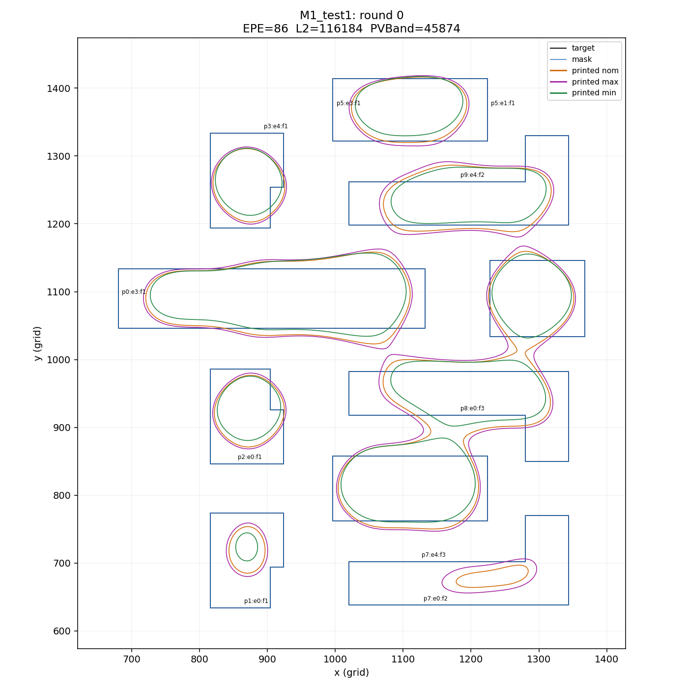
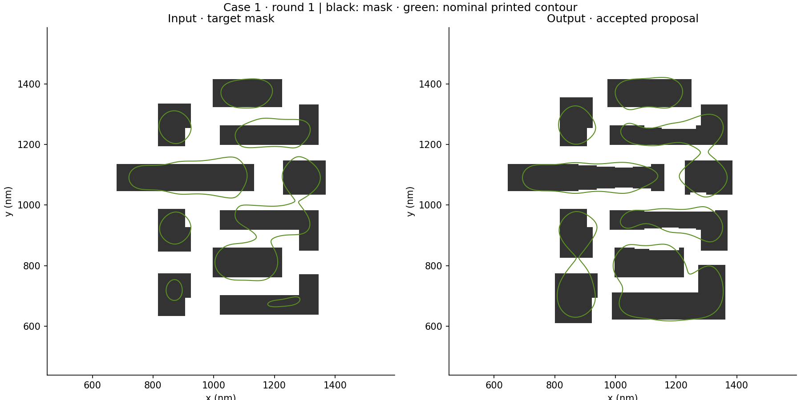

01 / INPUT
Agent 看到了什么

原始输入图片，可点击放大。热点图保留实际边段 ID 与测量标注。
- 可编辑主边段
- 208
- 固定辅助探针
- 624
- 步长 / 动作数量
- 无数值上限
- PVB 固定上限
- 73,398.4 nm²
NATIVE AGENT · INVERSE LITHOGRAPHY
让 Agent 读取版图与光刻反馈，直接提出几何修正。
两组真实版图，十五轮决策，一条可追溯的优化路径。
SRAF 动作被允许，但未启用推荐；这两条轨迹中没有提出或保留 SRAF。渐变仅用于播放过渡。
01 / THE LOOP
目标版图与测量点固定。Agent 决定如何移动边界，真实光刻仿真决定是否保留。
目标 / 当前 mask
轮廓、热点与 EPE
读取图像与状态
输出结构化几何动作
几何与打印检查
OpenILT 三工艺角
PVB 上限内
EPE 优先，再比较 L2
02 / INSIDE ONE ITERATION
从原始 target 冷启动。Agent 接收两张标注图与结构化状态，提出 99 个边段移动；控制器重建 mask 并独立验证。

原始输入图片，可点击放大。热点图保留实际边段 ID 与测量标注。
结构化提案节选 · 正位移沿当前边的外法向，单位为 nm。
下载真实动作节选与理由几何与打印检查通过，PVB 在固定上限内，EPE 降低。验收后的 mask 成为下一轮输入。

由缓存仿真重新绘图：黑色 mask，绿色名义打印轮廓。
03 / MEASURED PROGRESS
展示初始状态与 15 次提案后的保留指标。拒绝、无动作或无效提案仍计入预算；曲线在这些轮次保持不变。
EPE 为官方 15 nm 阈值下的名义违例数；L2 为名义二值平方误差；PVB 为最大 / 最小工艺角打印图差异面积。三项均越低越好，但本实验只在 PVB ≤ 初始值 × 1.6 时按 (EPE, L2) 字典序验收。不同指标不保证同时下降。
各模型、策略和 case 仅一条轨迹。Astra 原始轨迹为历史参考，15 次提案不等于等 token、等耗时或等成本。SRAF 推荐组与原 Astra 属于不同优化路径。
04 / IN CONTEXT
采用 OpenILT 论文第 3 页 Tables I / II 中的 case1、case2 数据。保留原论文结果与 OpenILT 复现版本的区别，并列出本项目 15 轮结束时的同一张保留 mask 指标。
| 方法 / 模型 | 数据来源 | CASE 01 | CASE 02 | ||||
|---|---|---|---|---|---|---|---|
| EPE ↓ | PVB ↓ | L2 ↓ | EPE ↓ | PVB ↓ | L2 ↓ | ||
“OpenILT 复现”对应论文中的 “Our” 列；“原方法报告值”对应论文引用的原方法列。GAN-OPC 原方法的 EPE 未报告，保留为空值。Astra + SRAF 推荐最终保留 SRAF 数量为 Case 1：2，Case 2：0。